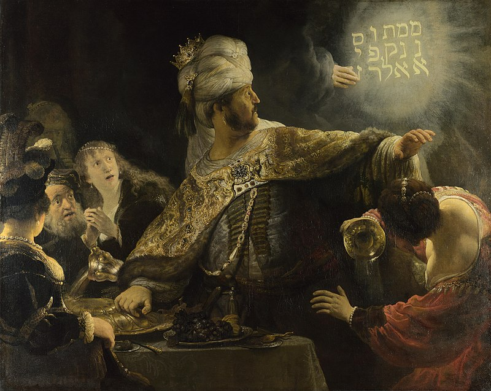

Самые знаменитые произведения
К середине 1650-х годов живописец стал настоящим мастером, умело покоряя свет и цвет ради эмоциональной выразительности образов. Но доживал свой век он в нищете и одиночестве, похоронив вторую жену и сына. Последние работы художника посвящены размышлению о столкновении в человеческой душе зла с добром. Завершающим аккордом стал главный шедевр мастера – «Возвращение блудного сына», написанный в 1669-м, в год смерти художника. Раскаявшийся сын, стоящий на коленях, выразил весь трагизм жизненного пути человека, а в образе отца можно увидеть саму любовь и бесконечное всепрощение. На сегодня сведения о работах мастера таковы: он автор более 100 рисунков, 300 офортов и 350 картин. Все произведения Рембрандта – завидные экспонаты лучших музеев мира.
Самые известные картины:
- «Портрет пожилой женщины» (1631);
- «Снятие с креста» (1633);
- «Саския – Флора» (1634);
- «Блудный сын в таверне» (1635);
- «Даная» (1636);
- «Ночной дозор» (1642);
- «Артаксеркс, Аман и Эсфирь» (1660);
- «Еврейская невеста» (1669);
- «Возвращение блудного сына» (1669);
- «Пир Валтасара» (1635)
После смерти гения о его полотнах надолго забыли. Только через полтора столетия люди услышали голоса, поняли взгляды и разгадали мысли героев картин Рембрандта, художника, променявшего славу и деньги на уникальный путь постижения сути.